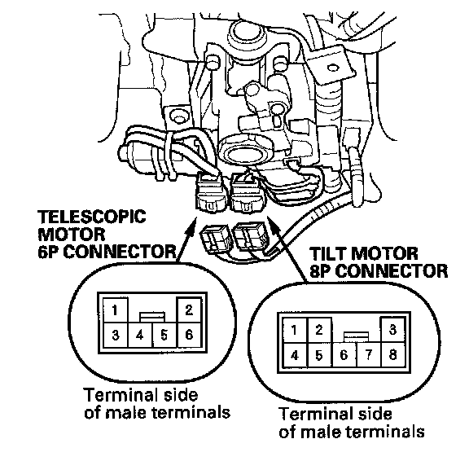
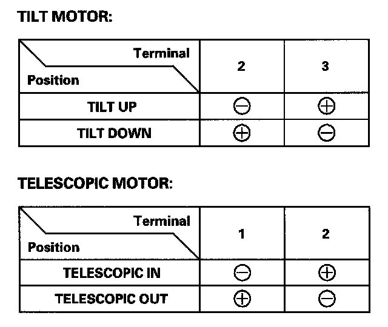

Power Tilt/Telescopic Steering Motor Test
Power Tilt/Telescopic Steering Motor Test1. Remove the steering column covers.

2. Disconnect the 6P connector (A) and 8P connector (B) from the power tilt/telescopic steering motors.

3. Check each motor by connecting power and ground according to the table. When the motor stops running, disconnect battery power immediately.
4. If the motor does not run or fails to run smoothly; replace the steering column assembly.